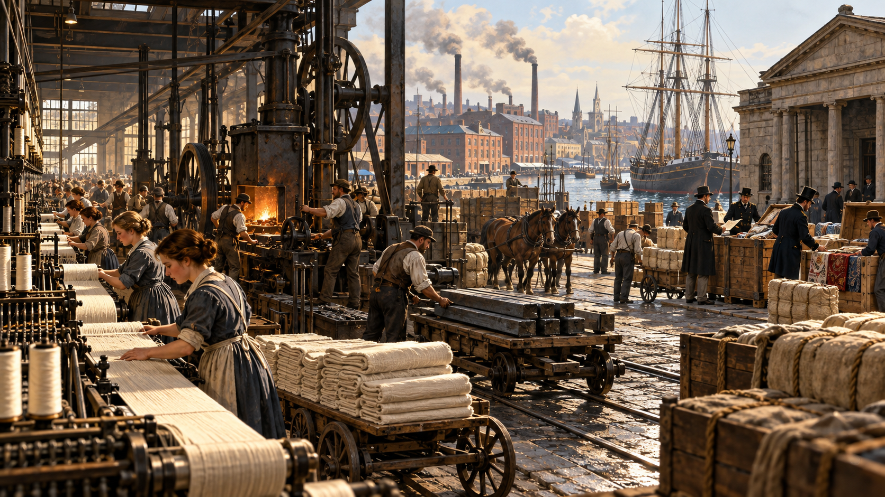
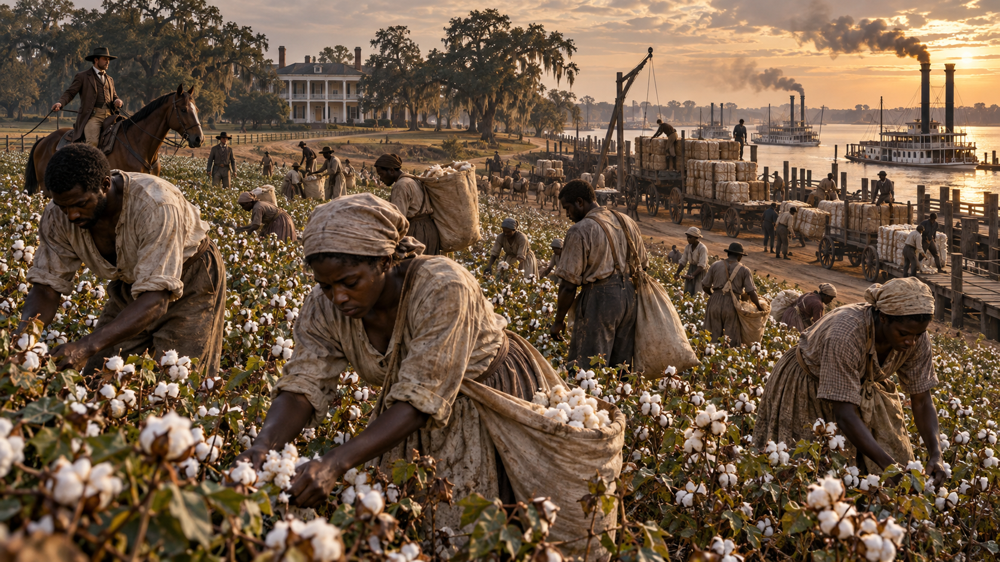

01 · Resource Endowment
대륙 규모의 자원
풍부한 토지와 광물은 농업·철도·철강의 원료 기반을 제공했지만, 자원 자체가 산업화를 보장한 것은 아님
농토식량 공급과 거대한 내수시장 형성
광물석탄·철광석 기반의 철강 생산
수로강·운하·항만을 활용한 저비용 운송
쟁점제도·기술·자본과 결합할 때 성장 동력화
해밀턴의 국가 설계에서 브레튼우즈 체제까지
| 구간 | 핵심 흐름 |
|---|---|
| 0~50분 | 파운딩 파더스 → 제도 설계 → 산업 통합 |
| 50~60분 | 휴식 |
| 60~100분 | 세계대전 → 브레튼우즈 → 미국 중심 질서 |
후발국 미국은 어떻게 세계질서의 설계자가 되었는가?
관찰 초점: 생산력만으로 패권국이 될 수 있는가
군사적 승리를 헌정 질서와 절제된 대통령 권력으로 전환한 국가 통합의 상징
대륙군 총사령관으로 독립전쟁을 이끌고, 1787년 헌법제정회의 의장과 초대 대통령으로 새 연방정부의 권위를 정착
국가신용·은행·관세·제조업을 하나의 체제로 묶어 연방의 경제적 능력을 설계한 인물
초대 재무장관으로 연방 부채의 통합, 국립은행, 조세 기반, 제조업 육성안을 추진해 국가신용과 자본시장의 토대를 구축
개인의 자유와 농업 공화국을 내세우면서도 대통령 권력을 활용해 대륙국가의 규모를 확장한 인물
독립선언서의 주 저자, 종교자유법과 버지니아대학교 설립, 대통령 재임 중 루이지애나 매입으로 미국 영토를 거의 두 배로 확대
파벌을 없애기보다 넓은 공화국과 권력 분립으로 통제하는 헌법적 장치를 설계한 인물
버지니아안을 준비하고 헌법제정회의 논의를 기록했으며, 연방주의자 논고와 권리장전을 이끌어 ‘헌법의 아버지’로 평가
과학자의 신뢰와 인쇄 네트워크를 외교 자산으로 바꾸고, 타협을 통해 연합을 가능하게 한 공공 지식인
독립선언서와 헌법 서명, 프랑스와의 동맹·원조 확보, 파리조약 협상 참여로 혁명전쟁의 국제적 승리 조건을 마련
풍부한 토지와 광물은 농업·철도·철강의 원료 기반을 제공했지만, 자원 자체가 산업화를 보장한 것은 아님
농토식량 공급과 거대한 내수시장 형성
광물석탄·철광석 기반의 철강 생산
수로강·운하·항만을 활용한 저비용 운송
쟁점제도·기술·자본과 결합할 때 성장 동력화
이민은 공장의 노동력만이 아니라 기술·기업가정신·도시 소비를 동시에 확대하며 산업사회의 인구 기반을 형성
노동철도·광산·공장의 대규모 인력 공급
기술유럽의 숙련과 지식이 산업 현장으로 이동
소비도시 인구 증가와 대량소비시장 확대
그늘저임금·차별·배제 정책이라는 사회적 비용

값싼 영국 제품과 바로 경쟁하기보다 관세로 가격 차를 줄여 미국 제조업이 설비·숙련·규모를 축적할 시간을 확보
보호수입품 가격 상승과 국내 생산의 상대적 이점
육성유치산업의 학습·투자·고용 확대
재정소득세 이전 연방정부의 핵심 세입
비용소비자 가격 상승과 지역 간 이해 충돌

노예제는 인간의 자유를 박탈한 강제노동 체제이자 면화 수출·금융·해운을 연결한 경제 구조로 미국 성장의 근본 모순
강제노동노예가 된 사람의 몸과 노동을 재산화
면화영국 산업혁명과 연결된 핵심 수출품
금융토지·노예·작물을 담보로 신용과 부 축적
모순자유의 공화국과 인종적 지배의 정면 충돌
패권의 비밀: 부를 신용·강제력·규칙으로 전환하는 능력
대륙 시장·철도·기업 조직이 결합하며 미국 제조업 생산 규모가 약 50년 사이 14.8배로 확대
규모표준화·대량생산으로 단위비용 하락
시장내수 기반의 기업이 해외시장으로 확장
전환민간 공장을 군수 생산기지로 빠르게 전환
영향동맹국까지 공급하는 ‘민주주의의 병기창’ 형성
연준·재무부는 대중의 저축과 은행 신용을 국채로 모아 전쟁비용의 약 3분의 2를 조달
동원4차례 국채 발행으로 170억 달러 이상 조달
확산약 2천만 명 참여로 국가신용의 사회적 기반 확대
통화전후 달러가 국제결제와 외환보유의 중심으로 부상
영향자본 공급 능력이 외교·전쟁·재건의 지렛대로 변화
1944년 군사비 910억 달러는 무기 생산뿐 아니라 병력·수송·기지·동맹 지원을 묶은 세계 규모의 작전 능력
생산항공기·전차·함선·탄약의 압도적 공급
병참대서양과 태평양을 잇는 수송·보급망 구축
동맹무기대여와 연합지휘로 타국 전력까지 결합
영향경제적 우위를 전쟁 결과와 협상력으로 전환
브레튼우즈의 44개국 합의는 달러 중심 환율체제와 IMF·세계은행을 결합해 미국의 힘을 반복 가능한 국제규칙으로 전환
통화금과 연결된 달러를 환율체제의 기준으로 설정
기구IMF·세계은행으로 안정·재건 자금의 경로 설계
규칙개별 압박보다 회원국이 따르는 절차로 영향력 행사
영향일시적 승리를 장기간 지속되는 질서로 제도화
핵심 보고서: 공공신용 보고서 1790 · 국립은행 보고서 1790 · 제조업 보고서 1791
헌법은 개별 주가 감당하기 어려운 권한을 연방 차원에 결합
왼쪽 단계를 차례로 선택해 연방 신용체계를 조립
자료: Federal Reserve History · The First Bank of the United States
핵심 논리: 자유경쟁 이전의 생산역량 확보
강한 연방 · 국립은행 · 제조업 · 적극적 헌법 해석
우려: 영국 의존과 취약한 국가신용
주권 강조 · 가족농 · 분산 금융 · 엄격한 헌법 해석
우려: 금융 독점과 도시 엘리트의 지배
주 약어 위치를 단순화한 타일 지도
자료: Library of Congress · The Civil War in America: Prologue
전쟁의 교훈: 생산·물류·금융·인구의 장기 동원력
해밀턴의 정책 가운데 현대 국가 성장에 가장 중요한 정책 하나를 골라줘. - 선택: 연방 강화·국가신용·국립은행·보호관세 - 근거: 기대 효과 1개·부작용 1개 - 결론: 30초 발표문
10분 뒤 세계 패권의 완성 시작
핵심 과제: 규모의 효율과 경쟁의 균형
미국 패권의 지속적 긴장
변화: 자본 수입국 → 자본 공급국
모순: 정치적 거리두기와 경제적 상호의존
자료: 미국 국립문서기록관리청 · 브레튼우즈 회의 기록 · 핵심 전환: 힘의 우위 → 규칙의 우위
패권의 결정적 조건 하나를 골라줘. - 선택: 생산력·금융력·군사력·제도력 - 근거: 미국 역사 사례 2개 - 반론: 다른 조건이 더 중요하다는 주장 1개 - 결론: 한 문장
국가 설계 → 산업 통합 → 전쟁 동원 → 국제질서 설계